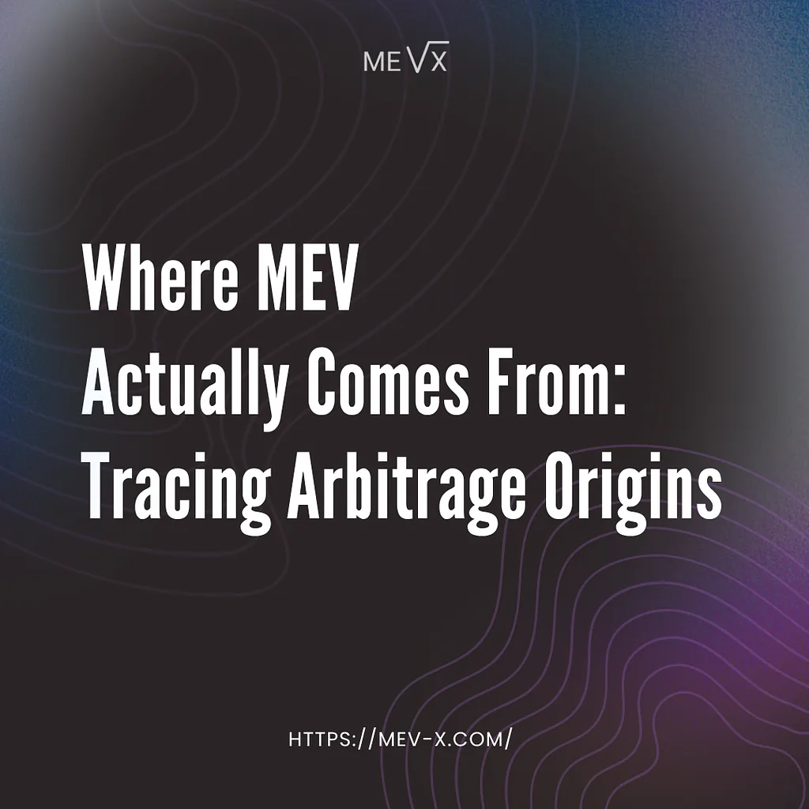

This material was created by the MEV-X team for educational purposes. MEV-X is a research and commercial project created for the extraction of MEV, which aims to form a reliable scientific community and promote the fair distribution of the extracted MEV.

People building MEV protection products tend to focus on extraction — how bots find opportunities, how fast they submit bundles, how block builders prioritize. That’s the visible part. It’s also the less interesting part.
The more interesting question is upstream: which transaction created the MEV opportunity in the first place?
MEV opportunity attribution is the process of identifying which specific on-chain transaction caused the price imbalance that an arbitrage bot later exploited. Understanding attribution is what tells you where to intercept the value before it leaks.
We ran large-scale research to answer it. By the time we built Homelander, we already had a strong prior — but we verify everything with data before it becomes product.
Here’s what the data showed.
Almost every arbitrage comes from one trade
Running attribution analysis we found that the vast majority of atomic arbitrage opportunities on EVM networks trace back to a single source transaction: one swap, one price perturbation and that’s the whole story.
The single-source hypothesis: in competitive MEV markets, atomic arbitrage opportunities are predominantly created by one preceding transaction rather than complex multi-transaction sequences. One user action shifts reserves in one pool, price falls out of sync with neighboring pools, a searcher closes the gap. Done.
This makes sense once you think about how competitive MEV markets actually work. Bots don’t wait for optimal conditions, they extract whatever’s there, immediately, before anyone else can. Complex multi-source setups rarely survive long enough to be captured. Single-source cases dominate because by the time anything more complicated builds up, it’s already gone.
We validated this across multiple attribution methods. Shapley value decomposition on the edge cases (the ones where multi-source attribution looked genuinely plausible) still showed one transaction carrying the overwhelming share of the weight, with everything else marginal.
What this means for where the hook should fire
If MEV is predominantly created by single swap events, the logical place to capture it is immediately after that swap. This is exactly where MEV bots focus. Every searcher watching the mempool is trying to land their backrun as close to the originating swap as possible.
The result is a constant arms race: faster infrastructure, higher priority fees, more aggressive bundle submissions, all competing for the same narrow window. It’s expensive, wasteful, and the protocol that generated the opportunity sees none of the value — it flows to whoever won the race. (Fair, to some extent, but hardly efficient from an ecosystem perspective.)
But there’s a more elegant solution.
MEV internalization is the practice of capturing arbitrage value generated by a DEX’s own orderflow atomically inside the originating swap transaction. It’s possible to eliminate the race entirely: if the opportunity is created the moment a swap executes, it can be captured in that same moment, inside the same transaction, without ever entering the public mempool where competition begins.
That’s exactly what Homelander does: the post-swap hook fires inside the same transaction as the originating swap, the backrun executes atomically, and the value flows back to the protocol that generated it.
There’s sometimes skepticism about whether post-swap hooks are “fast enough” to capture meaningful MEV. The question misunderstands the timing entirely. MEV extraction through a post-swap hook doesn’t slow down, alter, or interfere with the originating transaction in any way — the extraction either happens atomically inside the transaction or it doesn’t happen at all. The sender sees no difference either way.
(But if you’re still worried about speed — we’ve executed over 1.5 million successful transactions in competitive on-chain environments. Yeah, we’re fast.)
Concentrated liquidity creates the most MEV opportunities
The research also surfaces something useful for anyone thinking about which DEX integrations actually matter.
MEV opportunity density, which we define as the frequency and size of arbitrage windows created per unit of trading volume, is not evenly distributed across AMM types — and the gap between them is significant.
Concentrated liquidity pools (Uniswap V3, Algebra, Uniswap V4) show up in the vast majority of opportunity-creating transactions, while traditional constant-product pools contribute much less despite often carrying higher absolute volume: more liquidity doesn’t translate to more MEV, but more price impact per trade does.
The reason is mechanical. Concentrated liquidity means tighter price ranges, which means individual swaps move prices more sharply per unit of volume. More price impact per trade = more frequent and more profitable arbitrage windows.
Most protocols building on concentrated liquidity architecture have never measured how much value their orderflow generates for external searchers. The number is rarely trivial, and it scales directly with activity — more volume means more swaps, more tick crossings, more arbitrage windows. The opportunity grows in proportion to the protocol’s own success, which means MEV internalization isn’t a one-time fix but a recurring revenue channel that compounds as the protocol does.
Conclusion
We’ve kept the numbers out of this article intentionally. The full research paper, with complete methodology and findings, deserves its own treatment and that’s coming next!
The research doesn’t stop here — and neither does the question of how much your protocol is currently leaking. If you’re building on concentrated liquidity architecture and want to know what your orderflow is actually worth to external searchers, we have the tools to find out. In the meantime, Homelander is already live and returning that value to protocols that integrated.
For a deeper look at Homelander’s mechanics, check the documentation and our earlier publications (I/II/III). If you’d like to explore an integration or partnership, you can reach us on Telegram.